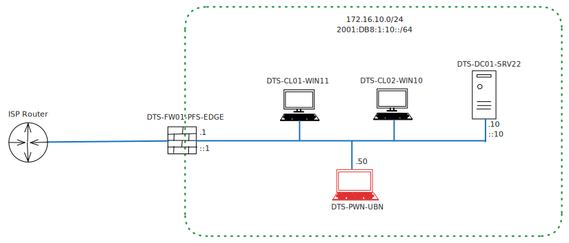

Hello World from DefendTheStack!
Brief Background
This is the first post in my new blog, DefendTheStack. The main reason why I created this website was to document my journey in learning offensive and defensive aspects of cyber security, focusing a bit more on Active Directory and Entra ID environments (formerly Azure AD). This doesn’t mean that almost EVERY post here will be about these two topics but it will be the meat of it (at least that’s how I see it for now). The reasons why I’ve decided to deep dive into these two technologies is because:
- Ubiquitous Adoption: Active Directory and Entra ID (Microsoft 365 ecosystems) are extremely common implementations. Almost every Active Directory course also mentions the classic “95% of Fortune 500 companies run Active Directory” statement. This is true not only for the Fortune 500 but also for most companies in the world that run IT systems. It has become the de-facto directory service with no “real” contender. Microsoft 365 cloud is also pretty widespread and a lot of organisations (both enterprises and SMBs) use it for productivity, security, IT operations, automation, or whatever purpose they require. Similar to Active Directory, Microsoft has mentioned that 70% of all Fortune 500 companies are using Microsoft 365. Aside from these numbers, I personally from my years of experience working in the industry have almost never come across a client that doesn’t use Active Directory or Microsoft 365. Because of how common these two systems are, I decided to train myself in it, so I can help a wide range of clients to secure their workloads on Active Directory and Microsoft 365. As consultants, it is very important that we have a deep understanding of how these systems work, how they can be attacked, and how they can be defended from these same attacks. I believe that without understanding the attacker mindset or offensive techniques you cannot be a well-rounded cyber security consultant.
- Because I love it: Even though I’ve listed this as the last reason, it’s actually the most important. I love doing this. I like working with computers, I like hacking into systems (it’s what got me into cyber security in the first place), and I like securing them. Cyber security is such an interesting field to study and work in and I’m so glad that I fell into this wonderful rabbit hole. Granted that there are times where I feel like ripping my hair out for various reasons but it’s all part of the game. Like everything else, you can’t have rainbows without a little rain.
Learning Resources
So since my main focus is on learning Active Directory and Microsoft 365 security, let’s start with the former. I found an awesome Medium article from Erica Zelic (@IAMERICAbooted on Twitter) that listed a whole bunch of resources to learn Windows and Active Directory in detail.
- Beginner's Guide to Self-Learning Windows and Active Directory: Part 1
- Guide to Self-Learning Windows and Active Directory: Part II
Most of these are reading material which I will be grinding through in my own time. On top of that, I have spun up a small AD lab environment which I’ll be using as the playground to learn and understand attack and defense techniques. I followed the TCM Security Active Directory hacking video guide. It has over 5 hours of content on setting up a simple AD lab and walking through various AD attacks. To start out I will be using the same lab setup as The Cyber Mentor’s AD video. We will expand our lab environment, for example syncing with Entra ID, as we learn more complex attack scenarios in the future.
The Lab Environment

Like I mentioned in the previous section, the lab is similar to TCM Security’s AD lab setup video. It’s a pretty simple virtual lab environment that I’m running on VMWare Workstation Pro. It’ll be more than enough for us to learn about a lot of concepts of Active Directory and Windows systems and also to demonstrate offensive and defensive techniques around them. As we deep-dive into more complex scenarios we’ll expand this virtual lab as needed. In the below table, I’ve detailed out the VM configurations and the IP addresses that I’ve configured.
| Hostname | IP Address | Configuration | Description |
|---|---|---|---|
| DTS-FW01-PFS-EDGE | 172.16.10.1 | OS: Based on FreeBSD CPU: 1 processor (1 core/processor) RAM: 512MB Storage: 20GB |
Edge firewall running pfSense Community Edition. DHCP has been enabled for the LAN subnet (172.16.10.0/24) |
| DTS-DC01-SRV22 | 172.16.10.10 | OS: Windows Server 2022 CPU: 2 processors (1 core/processor) RAM: 4GB Storage: 50GB |
Primary domain controller for virtual lab. The Windows image was downloaded from the Microsoft Evaluation centre. |
| DTS-CL01-WIN11 | DHCP | OS: Windows 11 Enterprise CPU: 2 processors (1 core/processor) RAM: 4GB Storage: 64GB |
Client computer joined to the domain. |
| DTS-CL02-WIN10 | DHCP | OS: Windows 10 Enterprise CPU: 2 processors (1 core/processor) RAM: 2GB Storage: 60GB |
Client computer joined to the domain. |
| DTS-PWN-UBU | 172.16.10.50 | OS: Ubuntu 24.04.3 CPU: 2 processors (1 core/processor) RAM: 4GB Storage: 25GB |
Attacker machine connected to the LAN network |
The network (172.16.10.0/24) that I’m using to connect the VMs together was done using LAN segments in VMWare Workstation Pro. LAN segments allow you to create an isolated network environment. VMs in a LAN segment can talk to each other but cannot route to other networks by default (which is why I’ve implemented the pfSense firewall to allow Internet access). This allows you to safely carry out security testings or attack scenarios without having to worry about your home network. Also remember that LAN segments require you to manually setup IP addressing either by static IP configurations or by setting up a DHCP server by yourself (in my case the DHCP server is the pfSense firewall).
To start out, the AD domain is also pretty simple. We’ve a single forest domain with the domain name defendthestack.com setup and we also have created a few user accounts as follows:
| User Display Name | User Principle Name | Description |
|---|---|---|
| Eric Cartman | e.cartman@defendthestack.com | Domain User |
| Kyle Broflovski | k.broflovski@defendthestack.com | Domain User |
| Kenny McCormick | k.mccormick@defendthestack.com | Domain Administrator |
| SQL Service | SQLService@defendthestack.com | Service account with domain admin privileges (bad practice #1) and password in account description (bad practice #2) |
..and yes, I love South Park!!
All the accounts that I created for this lab have not-so-great passwords set up intentionally so it is easier for us to crack/bruteforce when needed, but in a way one could say that these passwords are closer to reality because humans still suck at picking strong passwords (long random passphrases FTW!).
I’ve also created an SMB file share in the domain controller (\\DTS-DC01-SRV22\ManBearPig) and populated it with some text documents as dummy data as also shown in TCM’s video.
Well that’s the homelab setup! I will be using this environment to safely learn, test, and defend the various attacks and security concepts which I will be writing more in subsequent blog posts!